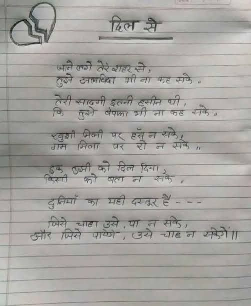

File: hin_sample_14.jpg

दिल मे मानो कोई तेरे अंदर से, हुज्जी अलबका भी ना कह सके, जैसी बाढ़ी हलनी की हो, जिंदगी होके बेरात भी ना कह सके, जुड़ी निजी पर हूँ के लो, जिस भी लाल ले बांन बोने, हुक कुमा का दिल पूछ, जिस्म को बात ना को सके, डुबकियों का मही दरकर है -- - मिसे -आरा असे, या ना रोके, और मिसे पाएगी, उसे -आरा न आकूं। * को सटीक रूप में दर्शाया गया है। सभी व्याकरण और शब्दों को अपनी आदत और लिखावट के अनुसार निर्धारित किया गया है।)*
दिल से जाने लगे तेरे शहर से, तुझे अलविदा भी ना कह सके. तेरी सादगी इतनी हसीन थी, कि तुझे बेवफा भी ना कह सके. खुशी मिली पर हँस न सके, गम मिला पर रो न सके " इक उसी को दिल दिया, किसी को बता न सके. दुनियाँ का यही दस्तूर है --- जिसे चाहा उसे, पा न सके, और जिसे पाएंगे, उसे चाह न सकेंगे।।
![Image]() *The image contains a drawing of two hands holding each other. There is no text in the image.* ## दिल से पानी लगे तेरे शहर से, तुझे अलविदा भी ना कह सके.. तेरी सवादगी इतनी हसीन थी, कि तुझे बेपत्ता भी ना कह सके॥ खुशी मिली पर हँस न सके, गम मिला पर रो न सके ॥ एक छब्बी को दिल दिया, किसी को बता न सके दुनियाँ का यही दस्तूर है --- पिसे चाहा उसे, पा न सके, और जिसे पामेगे, उसे चाह न सकेगें ॥
Cu) Pr er - =. जज + ees i मीना कटेसकिज कल हज को दित दि eT ST स्किप एफ एफ ‘ Set aT eee Sa Sea सिले पेशे: शान काका ne जा —— -<.
गत Sig eet तेरेशहिसलीग 7 “त्््य्7्75 emia hares एप "st ceresh ee peer: sat i पी पि प“पएफ: ee 5 te BI al Sa पी LB eer ares Ri To नी अ्खुओशों हीली पे अन्लसंप 7 7 > है = Ae छाल लाइट मिली पएजस लससकं खएख 7 न पुर री पाल "न: “rags ts Reg a देकियों का मर्वीदंस्तसि कसम 77 7 erga पाल hi फू ए 7 77 आर पधिले- प्राणी ज स्वल च्याक के आफ पा "Po ee Pee
रिल उलविदा गीना पेपफ्ामी ना निनी खुगी मिला को दिल दरतूर है उसे भिने पार्
❌ OCR Failed
क्षुबाध
दिटि जार्न जगे टूटेश्ाहर स्ने। तुब्ने उ्वजिबिका श्री जत बगह तन्ष बनाइएी इतनी दसीन थो बेषप् श्री नेंगी। वगर्हि निमिंए ड पिविना नई नक । हे ई ग़जना मिला ठुज़ी बीए देदेल दिजा जातां ल इ्श्ष मेंग यही गिपेन् ब्ोगडिंन खुले प। द गिवाश गुबने पा््राो नडनालन ई
ग ट गवानी त जलापा पेरशहरे बेरीसागी ए वेफामी वेप रततो शीनयो टमीन पुशो गल ससनसकेः ग मिला ग पि क रव प क दिल विप चुनियां क प प प चाटा ड पानसरे ग चाठल